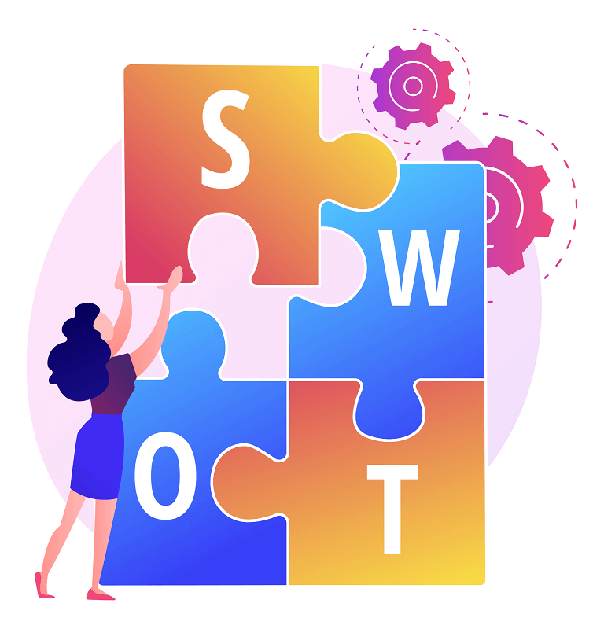
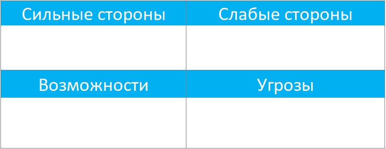

Быстро изменяющийся рынок и экономические условия требуют от бизнеса гибкости. Важно достойно выдерживать конкуренцию, следить за тенденциями и просчитывать наперед основные шаги.

Благодаря SWOT-анализу на практике можно за несколько часов собрать данные для составления бизнес-стратегии на ближайшие годы.
Что такое SWOT-анализ
SWOT-анализ – это эффективный и одновременно простой маркетинговый инструмент для оценки позиций компании на рынке, конкурентоспособности, стратегического планирования. Может применяться предприятиями любого масштаба: от крупных корпораций до стартапов.
Объектом анализа может выступать не только целая компания, но и ее отдельные филиалы, подразделения, торговые точки, конкретные товары или услуги.
В процессе анализа можно тщательно изучить рынок и разработать стратегию по эффективной борьбе с конкурентами путем предложения аудитории наиболее интересных предложений и программ.
SWOT-анализ объективно показывает, как можно увеличить продажи и перспективы развития компании в будущем.
История возникновения SWOT-анализа
Фактические данные о появлении матрицы сильных и слабых сторон до сих пор покрыты завесой тайны. Ведутся дискуссии о том, кто и когда придумал и применил впервые этот метод анализа. Известно лишь, что его основателями стали экономисты из США.

Так, есть предположение, что автором SWOT-анализа стал руководитель группы исследователей Стэндфордского университета Альберт Хэмфри. В 1970-х годах его команда работала над созданием концепта, который должен был помогать менеджерам всех уровней быстро адаптировать бизнес-процессы под основные задачи и цели фирмы. Уже в 1980-х годах это стало реальным благодаря SWOT-анализу.
Что касается общедоступных популярных источников, русская Википедия в своей статье указывает авторами методики профессоров Гарвардского университета, английская же вовсе не конкретизирует авторство.
Элементы SWOT-анализа
SWOT-анализ принято оформлять в виде матрицы, состоящей из 4 квадратов в формате 2×2. В ней по вертикали располагаются положительные и отрицательные факторы, по горизонтали – внутренние и внешние. Такой вариант представления понятен каждому специалисту.

S – strengths (сильные стороны)
К сильным сторонам относят преимущества, которые положительно выделяют компанию на фоне конкурентов. Они могут быть связаны с четко налаженным производством, мотивацией персонала и т. д.
Чтобы посмотреть плюсы, нужно ответить на следующие вопросы:

- Что компания делает лучше других?
- Как вы понимаете, что обходите других?
- На каких ценностях основан бизнес?
- Какие ресурсы вам доступны из числа недорогих и уникальных, которыми не могут воспользоваться другие фирмы?
- Какие бизнес-процессы и достижения вы можете назвать успешными?
- Какие у вас есть ресурсы из тех, которые недоступны другим?
- Какими активами обладает ваша команда и компания в целом?
- Ваше УТП?
- Чем ваши продукты нравятся клиентам?
Любую черту можно считать сильной, только если она дает компании реальное преимущество, а не служит способом не отставать от рынка.
W – weaknesses (слабые стороны)
К слабостям можно отнести недостатки продукции, ограниченные мощности и все, что мешает росту прибыли, развитию компании.
На этом этапе стоит сосредоточиться на следующих моментах:
{kind=link}
- Заметны ли другим факторы, которые вы считаете слабостями?
- Чего вам не хватает для удержания конкурентоспособности?
- Что в компании требует улучшения?
- Почему другие предприятия вас опережают?
- Качество каких бизнес-процессов вы могли бы сделать лучше?
- Клиентам удобно пользоваться вашими услугами/покупать ваши товары?
- Основные причины потери клиентов?
- Что не нравится вашим клиентам? О чем они чаще всего могут написать в отрицательных отзывах?
- Где в вашей воронке продаж самое проблемное место?
O – opportunities (возможности)
К этой категории относят любые события, которые могут положительно повлиять на дела в компании и ее положение на рынке. Они возникают по мере того, как меняется экономика, спрос, развиваются технологии.
Даже незначительные превосходства могут иметь значение для компании:
{kind=link}
- Наблюдаете ли вы рост рынка, спроса?
- Какие изменения на рынке влияют на вашу фирму и как?
- От чего зависит развитие компании?
- Какие способы улучшения продаж вы видите?
- Все ли ресурсы вы используете на 100%?
- Все ли рекламные каналы работают эффективно?
- На ваш взгляд, ресурсы внутри организации распределены эффективно?
- Как повысить узнаваемость бренда?
T – threats (угрозы)
Это внешние, а иногда и внутренние факторы, мероприятия, которые могут ухудшить показатели компании, например, изменения в законодательстве, перебои с поставками, текучка кадров.
Чтобы их выявить, нужно ответить на ряд вопросов:
{kind=link}
- Какие проблемы могут сопровождать выпуск продукта и его реализацию на рынке?
- Существуют ли потенциальные конкуренты, которые могут вытеснить вас с рынка?
- Есть ли поставщики, которые обеспечат бесперебойную поставку сырья по выгодным ценам?
- Существуют ли технологические разработки, которые могут существенно повлиять на бизнес?
- Наблюдаются ли изменения в поведении ЦА, которые могут отрицательно сказаться на показателях компании?
- Есть ли на рынке тенденции, которые могут привести к краху предприятия?
- Насколько фирма уязвима к внешним силам?
- Политическая и экономическая ситуация в стране может сказаться на делах компании?
Возможные стратегии SWOT-анализа
Разные комбинации элементов SWOT-анализа позволяют составлять уникальные стратегии для организации. При разработке матрицы решений нужно следовать определенному алгоритму.
{kind=link}
- Стратегия прорыва – сочетает превосходства и возможности компании.
- Стратегия первого переходного периода – сочетает угрозы бизнесу и преимущества компании, с помощью которых вы сможете снизить риски.
- Стратегия второго переходного периода – сочетает уязвимости компании и возможности, которые помогают трансформировать слабости в достоинства.
- Стратегия выживания – сочетает потенциальные угрозы и слабые стороны предприятия.
Основная суть разработки стратегии заключается в минимизации действия слабостей и предельном задействовании положительных сторон бизнеса.
Матрицы SWOT-анализа
Для аналитики применяется:
- Простая матрица. Строится на основании данных по каждому параметру. Сведенья по ним записываются в квадранты и составляется матрица.
- Матрица решений. Предполагает разработку стратегии компании с учетом имеющихся возможностей, угроз, слабостей и положительных сторон бизнеса.
Виды SWOT-анализа
SWOT-анализ классифицируют по типам в зависимости от двух факторов: характер объекта, который анализируют, и предназначение.
По характеру объекта выделяют SWOT-анализ:
- коммерческого предприятия;
- некоммерческой или правительственной организации;
- образовательного учреждения;
- личности.
По предназначению SWOT-анализ бывает:
- экспресс – не требует глубокого изучения рынка, точных данных о финансах, проводится для получения объективной картины о деятельности предприятия;
- комплексный – задействует результаты крупных маркетинговых исследований и статистической информации;
- сводный – предполагает получение предельно точных значений для стратегического анализа.
Большинству предпринимателей достаточно провести качественный экспресс-анализ для адекватной оценки сильных и слабых сторон бизнеса.
Преимущества и недостатки SWOT-анализа
Как и любой метод, SWOT-анализ имеет плюсы и минусы. Главная его особенность – способность давать ответ на вопрос, что уже сделано, но неспособность рассказать о том, что нужно сделать. Таким образом, итоги анализа заставляют задумываться о возможных последствиях предпринимаемых действий.
|
Плюсы |
Минусы |
|
|
Правила
Чтобы SWOT-анализ получился максимально эффективным, в ходе его проведения нужно придерживаться ряда правил.
В основе только факты. Информация, основанная на догадках и предположениях не должна участвовать в анализе, это исказит результаты.
Максимум источников. Для получения исходных данных для анализа необходимо задействовать клиентов, сотрудников всех уровней, рыночные отчеты, открытые исследования.
Взгляд со стороны. Выявлять слабости и превосходства бизнеса нужно не изнутри, а с точки зрения потребителя и участников рынка.
Нет субъективности. Лучше, чтобы в анализе участвовали несколько специалистов и данные, полученные в результате работы с фокус-группами.
Анализ без путаницы. Очень часто возможности бизнеса путают с преимуществами, а угрозы – со слабостями. Это неправильно. На внешние факторы компания не может повлиять.
Актуальные вопросы. Не стоит тратить время на оценку и обработку показателей, которые не пригодятся в анализе.
Конкретизация. Если фирма крупная, лучше анализировать ее не целиком, а по частям: отдельные группы товаров, филиалы, отделы и другие области исследования.
Точность. Результаты анализа полезны, когда сведенья предельно точны, именно поэтому двусмысленных формулировок нужно избегать.
Важные выводы. Матрица не должна быть перегружена информацией второстепенного значения.
Частые ошибки
Зная основные правила, можно выделить ошибки, которые чаще всего происходят при аналитике:
- пространные формулировки, которые можно трактовать по-разному;
- путаница в понятиях, чаще это неправильное разграничение внутренних и внешних факторов;
- анализ проводится без конкретной цели;
- используются факторы, которые не имеют существенного значения для анализа;
- субъективный анализ и, как следствие, неточный, однобокий результат.
Подготовка к проведению SWOT-анализа
Перед началом анализа важно записать ключевые тезисы о компании. На этом этапе необходимо думать в следующих направлениях:
- Положение на рынке.
- Конкуренты
- Потенциальные изменения в отрасли и экономике.
В рамках подготовки к SWOT-анализу ответьте на следующие вопросы.
- Какие ценности компании имеют наивысшее значение в вашей сфере?
Кто ваша ЦА?
Мнение ЦА о вашем продукте?
Почему клиенты покупают ваш продукт?
Почему от вашего продукта отказываются? - Кто основные конкуренты вашего бизнеса?
Какие продукты они предлагают?
Способы и места реализации продуктов конкурентами?
Мнение ЦА о продуктах других марок?
Почему клиенты покупают продукты других марок?
Почему от продуктов других марок отказываются? - Куда движется рынок?
В какую сторону движется экономика?
Развиваются ли технологии?
Появляются ли новые компании в вашей сфере? - Как меняются медиа?
Как работает политика и право в вашей сфере?
Как меняются предпочтения потребителей?
Какие существуют каналы распределения?
Как выполнять SWOT-анализ
Когда подготовка закончена и есть ответы на вышеперечисленные вопросы, можно приступать к выполнению SWOT-анализа. Разделим весь процесс на несколько шагов, это даст понимание того, какие действия и в какой последовательности нужно выполнять.
{kind=link}
Шаг 1. Определить цели и задачи компании
Любая аналитика начинается с определения целей и задач. Это помогает понять и учитывать, чего вы или ваша компания хотите достичь, зачем нужно развивать бизнес. Поставленные цели и задачи станут своеобразным маяком на последующих этапах, когда понадобится определять каждую категорию матрицы.
Шаг 2. Выявить преимущества и слабости бизнеса
Чаще это события и ресурсы компании, которые имеют прямую связь с ее финансами, управлением и внутренним маркетингом.
На плюсы и уязвимости компания может влиять, чтобы достигать целей и регулировать свое положение на рынке. Одна и та же характеристика при одних условиях может оказаться преимуществом, а при иных – слабостью.
Откуда взять плюсы и уязвимости
- Продукт – характеристики, функционал, внешний вид, комплектация, упаковка, комментарии (отзывы) потребителей.
- Ассортимент – разнообразие, в сравнении с другими компаниями.
- Цены – гибкость ценовой политики, наличие скидок, рассрочки, покупки в кредит, динамика цен, чувствительность потребителей к их изменениям.
- Имидж компании – значимость бренда на рынке, узнаваемость, лояльность потребителей.
- Технологическое преимущество – есть ли технологии, благодаря которым вы можете снизить затраты и/или повысить качество товаров.
- Себестоимость – позволяет ли она выпускать продукт не хуже, чем у конкурентов, и продавать его дешевле.
- Политика распределения – используете ли вы оптимальные каналы, применяете кобрендинговые акции.
- Продажи оффлайн – представленность товара в магазинах, их доля на полках, по сравнению с товарами конкурентов.
- Инвестиции – вложения в технологии, рекламу, продвижение, персонал, развитие, исследования.
- Методы продвижения – уникальные или типовые, насколько они эффективны.
- Гибкость – влияние на компанию рыночных изменений.
- Финансовые показатели – сравнение с конкурентами.
- Персонал – уровень текучки кадров, квалификация сотрудников, опыт работы, мотивация.
Как определить плюсы и уязвимости
- Проанализируйте каждый приведенный выше источник
- Сформируйте свой перечень характеристик.
- Постарайтесь выбрать в общей массе параметров ключевые.
- Подумайте, по каким параметрам вы обходите конкурентов, а по каким отстаете. Это и будут плюсы и уязвимости компании. Хорошо, если в распределении характеристик поучаствуют и ваши коллеги, это поможет избежать субъективной оценки.
Чтобы удостовериться, что характеристики действительно являются теми сторонами бизнеса, к которым мы их отнесли, проведите небольшой тест. Глядя на каждую из них, спросите:
- Эта сильная/слабая сторона повышает/снижает прибыль?
- Эта сильная/слабая сторона повышает/снижает удовлетворенность потребителей?
- Эта сильная сторона является преимуществом и выделяет компанию на фоне конкурентов?
Ответ «нет» на любой из вопросов – повод вычеркнуть черту из списка сильных или слабых сторон.
Шаг 3. Выявить возможности и потенциальные угрозы бизнеса
В отличие от сильных и слабы сторон, возможности и угрозы – это то, на что компания не может повлиять, воздействие извне. При определенных условиях они могут стать противоположностью.

Выявление внешних факторов заранее позволяет применять эту информацию при разработке маркетинговых стратегий.
Работа с возможностями
Источниками для поиска могут выступать:
- новые рынки сбыта;
- новая аудитория потребителей;
- новые потребности нынешних потребителей;
- увеличение частоты покупки и суммы чека;
- новые технологии;
- низкозатратные рекламные каналы;
- уход с рынка крупных конкурентов;
- экономическое состояние ЦА;
- государственное регулирование.
Чтобы определить возможности:
- Проанализируйте приведенные выше факторы, старайтесь искать те из них, которые имеют отношение к вашей компании.
- Составьте список возможностей для вашего бизнеса.
- Узнайте, действительно ли перечисленные характеристики к ним относятся. Для этого ответьте на 4 вопроса:
- Возможность соотносится с целями компании?
- Компания может реализовать ее за счет имеющихся или приобретенных средств?
- Есть ли шанс, что компания реализует данную возможность лучше, чем нынешнюю, или лучше, чем компании-конкуренты?
- Предположительная прибыльность соотносится с предельным уровнем рентабельности инвестиций?
- Составьте список из возможностей, по которым на все вопросы вы ответили «да».
Для проверки правильности определения характеристик используем тактику вопросов. Глядя на каждую возможность, спросите:
- Как она может увеличить прибыль предприятия или удовлетворенность ЦА продуктом?
- Достаточно ли ресурсов у компании для реализации?
Если вы не можете ответить на 1-й вопрос по какой-то из возможностей, вычеркивайте ее. Если вы дали ответ на 1-й вопрос, но отрицательно ответили на 2-й, отложите этот пункт до следующего периода анализа или вычеркните.
Работа с угрозами
Потенциальными угрозами могут выступать:
- изменение поведения ЦА;
- изменение размера ЦА;
- ослабление экономики и снижение доходов потребителей;
- введение правовых ограничений, дополнительных налогов, повышение текущих ставок;
- рост себестоимости при сохранении цен на прежнем уровне;
- ужесточение конкуренции.
Чтобы определить угрозы:
- Проанализируйте перечисленные факторы, обратите внимание на те, которые прямо относятся к предприятию.
- Запишите потенциальные риски.
- Оцените вероятность наступления каждой угрозы и возможные последствия для вашего бизнеса.
- Составьте перечень угроз, которые, по итогам оценки, имеют наивысшую вероятность наступления и несут самые серьезные риски для компании.
Чтобы проверить, верно ли определена каждая угроза, ответьте:
- Как она может повысить прибыль фирмы или снизить удовлетворенность товаром?
- Когда она может возникнуть?
Если ответ на первый вопрос по любой из возможных угроз вызвал затруднения, вычеркивайте ее. Если вы ответили на первый вопрос, но предположительный срок возникновения угрозы превышает 3 года, отложите ее до будущего года.
Шаг 4. Заполнить таблицу на основании полученных данных
Полученные списки сильных, слабых сторон, возможностей и угроз необходимо распределить между четырьмя квадратами. Получится простая матрица 2×2.

Шаг 5. Разработать стратегии и заполнить матрицу решений
На этом этапе необходимо разработать стратегии на базе парных комбинаций:
- возможности + сильные черты;
- возможности + слабые стороны;
- угрозы + сильные черты;
- угрозы + слабые стороны.
Результаты удобно оформить в виде таблицы – матрицы решений.
Шаг 6. Сделать выводы и составить план действий
Когда обе матрицы составлены, SWOT-анализ выполнен, необходимо на его основе сделать выводы и составить план дальнейших действий.
На основе сильных сторон:
- выделите основное превосходство перед конкурентами;
- продумайте, как сделать так, чтобы клиенты стали замечать превосходства.
На основе слабых сторон продумайте:
- как за счет сильных сторон усилить слабые;
- как сделать менее заметными слабые стороны, которые нельзя усилить.
На основе возможностей продумайте;
- как быстро ими воспользоваться;
- как применить сильные черты бизнеса для реализации;
На основе угроз продумайте:
- как превратить риски в возможности;
- как предельно быстро защитить предприятие от угроз.
Как провести SWOT-анализ за 30 минут
Чтобы выявить основные точки роста, используют экспресс-вариант SWOT-анализа, который можно провести всего за полчаса. Вот советы, как это сделать.
{kind=link}
- Подготовьте заблаговременно исходные данные (время на подготовку не входит в 30 минут).
- Заполните разделы матрицы.
- Выделите основные факторы влияния.
- Ответьте на 5 простых вопросов:
- Какое преимущество нужно развивать и укреплять?
- Какие плюсы компании потребители могут не замечать? Как быстро и доступно о них рассказать аудитории?
- Есть ли то, чего в настоящий момент не хватает товарам/услугам? Как это сделать предельно быстро?
- Как сделать так, чтобы слабые стороны оказывали меньшее влияние на бизнес? Есть ли шанс их доработать или скрыть?
- Можно ли устранить риски в короткий срок? Что для этого нужно сделать?
Ответы на эти вопросы позволяют сделать выводы и разработать план действий.
Что делать с результатами SWOT-анализа
Когда SWOT-анализ выполнен, на основании полученных результатов можно понять, как выглядит текущее положение компании на рынке, оценить конкурентоспособность в настоящий момент. Но также можно разработать несложные стратегии. Разберемся, как обрабатывать результаты анализа.
{kind=link}
Сформулируйте стратегические альтернативы
Данные по SWOT-анализу отражают события в настоящем времени. Для построения прогноза нужно все возможности и сильные черты скомбинировать попарно. Это поможет составить стратегии для увеличения присутствия компании на рынке путем использования частично реализованного и нереализованного потенциала.
Расставьте приоритеты среди альтернатив
Полученные бизнес-стратегии необходимо рассортировать по принципу эффективности в зависимости от того, насколько целесообразно внедрение той или иной стратегии.
Оцените альтернативы
Каждую из приоритетных альтернатив необходимо проанализировать по 4-м параметрам:
- финансовая целесообразность;
- увеличение доли рынка;
- операционные расходы;
- репутация.
Если бизнес-план не соответствует любому из этих критериев, от его внедрения стоит отказаться. Оптимально, если список приемлемых альтернатив сократится до 2-3 позиций.
Сформируйте дорожную карту
Для оставшихся стратегий, которые могут быть применимы в будущем, необходимо создать дорожную карту. Она должна содержать подробную информацию по следующим вопросам:
- долгосрочные перспективы;
- цели на ближайшие 12 месяцев;
- методика оценки развития стратегии;
- препятствия на пути к цели.
Результаты корректно оформить в виде выводов по каждому из бизнес-планов.
SWOT-анализ личности человека
SWOT-анализ личности, его еще называют карьерным, необходим для выявления сильных и слабых сторон человека, профессиональных возможностей и карьерных угроз. По итогам осуществляется стратегическое планирование карьерного роста сотрудников.
{kind=link}
Принцип здесь аналогичен тому, что применяется в бизнесе. В рамках аналитики составляются простая матрица и матрица решений, состоящие из 4-х главных категорий:
- Преимущества личности:
- Образование;
- Опыт;
- Профессиональные навыки;
- Деловые черты и личные качества;
- Поведение в стрессовой ситуации.
- Слабости личности:
- То, что трудно дается;
- Области, в которых человек некомпетентен;
- Предметы/ситуации, вызывающие дискомфорт;
- Уязвимости личности;
- Нелюбимые виды деятельности.
- Возможности:
- Знания, которые хотелось бы получить;
- То, что человек может реализовать при наличии компетенций, мотивации, финансов;
- Новые технологии;
- Рост рынка по специализации человека;
- Полезные знакомства и стратегические контакты.
- Риски:
- Предметы/ситуации, требующие внимания и/или времени.
- Предметы/ситуации, которые человек не может контролировать или которые вызывают у него чувство беспокойства.
Чтобы провести личностный SWOT-анализ, нужно:
- выделить уникальные личностные или профессиональные черты, которых нет у прямых конкурентов и специалистов из смежных сред;
- проанализировать вакансии в своей области, выделить основные требования к соискателям и обязанности, оценить соответствие им;
- брать во внимание разные вакансии;
- выделить в отдельный перечень свои личностные ресурсы (время, полезные знакомства, ценный опыт, финансы);
- определить плохие привычки, которые могут повлиять на работу;
- выявить триггеры, которые не дают профессионально развиваться или тянут назад.
Пример личностного SWOT-анализа
|
Факторы |
Сильные стороны |
Слабости |
|
|
|
|
Возможности
|
|
|
|
Угрозы
|
|
|
Примеры SWOT-анализа
Для понимания особенностей аналитики в разных сферах, рассмотрим несколько примеров.
SWOT-анализ ресторана
|
Сильные стороны |
Слабые стороны |
|
|
|
Возможности |
Угрозы |
|
|
SWOT-анализ гостиницы
|
Сильные стороны |
Слабые стороны |
|
|
|
Возможности |
Угрозы |
|
|
SWOT-анализ банка
|
Сильные стороны |
Слабые стороны |
|
|
|
Возможности |
Угрозы |
|
|
SWOT-анализ персонала
|
Сильные стороны |
Слабые стороны |
|
|
|
Возможности |
Угрозы |
|
Не найти работу с желаемой зарплатой |
SWOT-анализ строительной компании
|
Сильные стороны |
Слабые стороны |
|
|
|
Возможности |
Угрозы |
|
|
SWOT-анализ университета
|
Сильные стороны |
Слабые стороны |
|
|
|
Возможности |
Угрозы |
|
|
SWOT-анализ турфирмы
|
Сильные стороны |
Слабые стороны |
|
|
|
Возможности |
Угрозы |
|
|
SWOT-анализ предприятия
|
Сильные стороны |
Слабые стороны |
|
|
|
Возможности |
Угрозы |
|
|
SWOT-анализ «Сбербанк»
|
Сильные стороны |
Слабые стороны |
|
|
|
Возможности |
Угрозы |
|
|
SWOT-анализ «Лукойл»
|
Сильные стороны |
Слабые стороны |
|
|
|
Возможности |
Угрозы |
|
|
SWOT-анализ «Магнит»
|
Сильные стороны |
Слабые стороны |
|
|
|
Возможности |
Угрозы |
|
|
7 примеров решений, исходя из SWOT-анализа
Недостаточно провести SWOT аналитику, нужно еще правильно интерпретировать результаты. Рассмотрим примеры 7 бизнес-задач и их возможные решения простыми словами.
- Наблюдается сокращение дохода от продаж товаров в офлайн-магазинах при росте арендной платы.
Переносим продажи в онлайн: создаем интернет-магазин и отказываемся от аренды торговых точек. - Компания активно занимается продвижением на YouTube, ведет свой канал, с которого приходит более половины целевого трафика. Если канал внезапно заблокируют, фирма потеряет большую часть трафика.
Не зацикливаемся на YouTube и развиваем другие каналы, которые в дальнейшем будут приносить трафик. Например, страницу в Instagram. - В отделе маркетинга сотрудники систематически не укладываются в отведенные руководителем сроки.
Приглашаем менеджера проекта, который помогает руководителю ставить задачи грамотно, с учетом приоритета, объективно оценивать время, необходимое сотрудникам на выполнение. - Экономический кризис сказался на уровне жизни граждан, продажи элитной обуви значительно сократились.
Снижаем объемы выпуска элитной обуви и увеличиваем производство изделий средней ценовой категории. - Необходимое для производства оборудование регулярно выходит из строя. Позволить себе купить новую установку компания пока не может.
Находим партнеров с таким же оборудованием и договариваемся о его аренде, а в качестве оплаты делимся частью прибыли. - В Сети стали появляться негативные отзывы о компании с упоминанием некомпетентности сотрудников. Наблюдается снижение числа повторных продаж.
Отправляем персонал на курсы повышения квалификации, вводим систему бонусов для постоянных клиентов. - Клиенты жалуются, что офис трудно найти среди зданий несмотря на расположение в центре города. Многие звонят, договариваются о встрече в офисе, но не доходят.
Устанавливаем заметные указатели по наиболее вероятным маршрутам клиентов (от парковок, остановок общественного транспорта). На сайте, на визитках, в рассылках с приглашениями указываем карту с маршрутом относительно крупного ориентира.
Часто задаваемые вопросы
Этот метод помогает определить преимущества и слабости компании/человека, а также возможности и потенциальные риски, которые могут встретиться в ходе конкурентной борьбы или планирования бизнес-проекта.
СВОТ-анализ актуален и для компаний, и для человека, ПЕСТ более ориентирован на крупные организации и целые государства, позволяя определять внешние аспекты политики, экономики, социума и технологий.
Любые характеристики, которые не относятся к основным элементам матрицы.
Некоторые специалисты считают метод сомнительным, критикуют его за:
- субъективность;
- отсутствие конкретики;
- сложность интерпретации результатов;
- отсутствие иерархии факторов.
Метод позволяет наглядно отобразить реальное положение дел с учетом внешних угроз. В процессе аналитики появляются идеи для стратегического планирования во всех направлениях работы компании.
Желательно, чтобы в процессе анализа участвовало несколько человек. Общими усилиями удастся добиться предельно объективных результатов, расположенных в таблице по степени значимости.
Этот метод актуален для всех: от стартапов и микробизнеса до гигантов рынка. Он помогает выстроить наиболее эффективный путь развития с оглядкой на внешние факторы.
Заключение
По итогам SWOT-анализа можно увидеть полноценную общую картину положения дел в фирме: внутриорганизационные тенденции и рыночную ситуацию. Что касается стратегического планирования, одного СВОТ-анализа недостаточно, но он может послужить хорошим началом для составления бизнес-плана.
Оставить комментарий
Войти с помощью